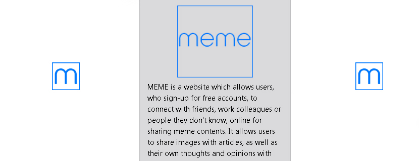

Real-Time Image Recognition
Thesis Research : Real-Time Image Recognition an app using OpenCV and PyQt5 that recognized and track people and mark their presence, and export it to a .csv so that their user can evaluate their data. You can find summary information here here.
Meme

Meme is an app using Django that helps create a centralized area for meme contents to share their creativity for each other. You can find it deployed here
Github Repo can be found here: https://github.com/paulorae/meme-project.
Elements
Elements is an archive app using Django that allows you to view the contents different elemental user in a particular element. You can find it deployed here
Github Repo can be found here: https://github.com/paulorae/elements-project.
Dweepy Sniffer
Dweepy Sniffer is an app using Dweepy and PyQt5 that gathers the data from dweet.io and export it to a .csv.here
Github Repo can be found here: https://github.com/paulorae/dweepy-sniffer.
About
My name is Paulo Rae Portades; ever since I was young I've had a passion for software engineering. Optimization that improves a process and presenting an information that visually appealing to an audience has always been exhilarating. I could only describe my love for programming as utter adoration.
I have created several projects with Python and Django Framework. I've also programmed a Software using OpenCV for Student Attendance Monitoring System in our College Research. I believe I would be a great addition to any team and would aid in creating the best inventions out there that I can.